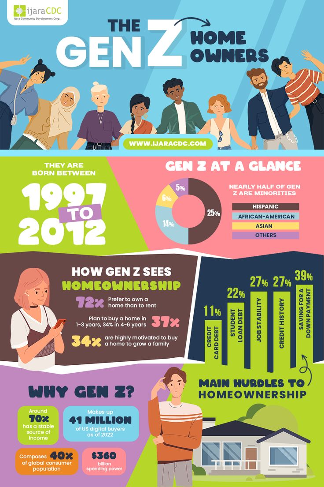

di sini saya mengerjakan tugas ke 5 saya dengan menggunakan html dasar
Generasi Z, yang lahir antara pertengahan 1990-an hingga awal 2010-an, tumbuh dalam dunia yang dipenuhi dengan teknologi digital, media sosial, dan perubahan sosial yang cepat. Di satu sisi, kemajuan teknologi memberi mereka akses yang luas terhadap informasi dan peluang global. Namun, di sisi lain, hal ini juga membawa tantangan yang signifikan terhadap kesehatan mental mereka. Salah satu masalah utama yang dihadapi oleh anak-anak Gen Z adalah tekanan sosial dari media sosial. Eksposur yang terus-menerus terhadap kehidupan yang tampak sempurna di dunia maya dapat menyebabkan perasaan tidak percaya diri, kecemasan, dan depresi. Mereka sering merasa harus memenuhi standar yang tidak realistis, yang pada gilirannya mempengaruhi kesehatan mental mereka. Selain itu, perubahan sosial dan lingkungan global, seperti krisis iklim dan ketidakpastian ekonomi, menambah beban mental anak-anak Gen Z. Mereka cenderung lebih cemas tentang masa depan, baik secara pribadi maupun global. Dalam situasi seperti ini, penting bagi orang tua, pendidik, dan masyarakat luas untuk memberikan dukungan yang memadai. Membantu anak-anak Gen Z mengelola stres dan tekanan adalah kunci untuk menjaga kesehatan mental mereka. Pendidikan tentang pentingnya kesehatan mental, menyediakan ruang untuk diskusi terbuka, dan memastikan akses ke layanan kesehatan mental yang terjangkau adalah langkah-langkah penting yang dapat diambil. Selain itu, mendorong aktivitas fisik, membatasi penggunaan media sosial, dan menciptakan lingkungan yang mendukung dan inklusif juga dapat membantu anak-anak Gen Z mengembangkan kesehatan mental yang kuat. Pada akhirnya, menjaga kesehatan mental anak-anak Gen Z adalah tanggung jawab bersama. Dengan perhatian dan dukungan yang tepat, kita dapat membantu mereka tumbuh menjadi individu yang kuat, sehat, dan siap menghadapi tantangan di masa depan. --- Teks ini dapat disesuaikan lebih lanjut sesuai kebutuhan atau konteks spesifik.
| Nama | Umur | Kota |
|---|---|---|
| nap | 17 | Jakarta |
| anggi | 23 | Bandung |
| bila | 21 | yogya |